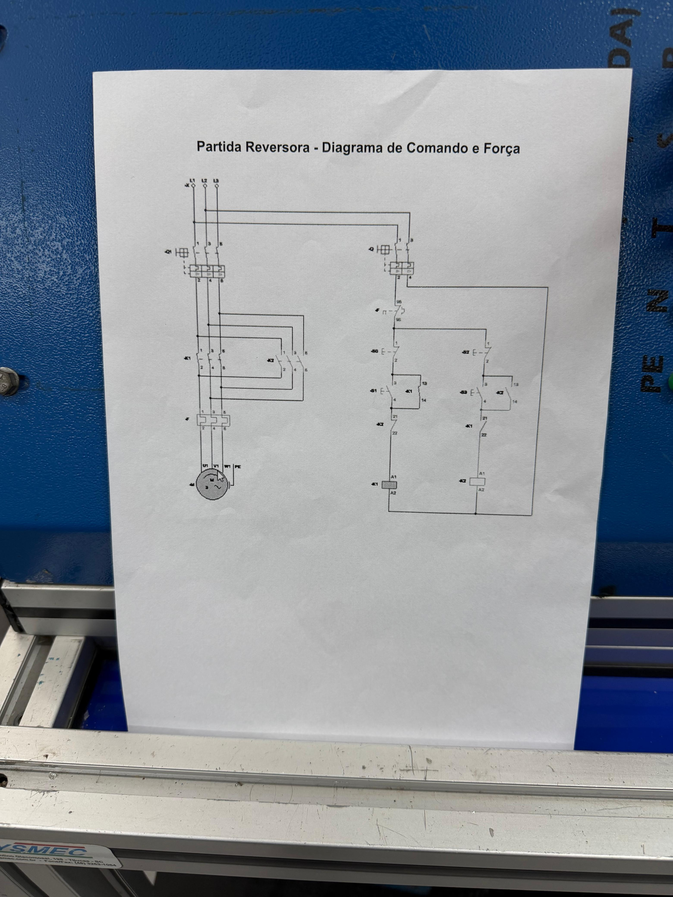

Projetos
Simulações no CADe_SIMU, o projeto elétrico e a montagem no painel.
Partida direta (CADe_SIMU)
-> Como funciona?
O motor liga direto na rede, por um único contator (K1). Apertando B1 (NA), a bobina de K1 é energizada, os contatos principais fecham e o motor gira. O contato auxiliar de K1 fica em paralelo com o B1 (contato de selo), então o motor continua ligado mesmo depois de soltar o botão.
Apertando B0 (NF) o circuito é interrompido e o motor desliga. O relé térmico (F1) também desliga tudo em caso de sobrecarga, e a lâmpada H1 mostra que o motor está ligado.
Partida reversora (CADe_SIMU)
-> Como funciona?
São dois contatores: K1 liga o motor em um sentido e K2 no sentido contrário, porque ele troca a ordem de duas fases. B1 liga K1 (lâmpada H1) e B2 liga K2 (lâmpada H2), cada um com seu contato de selo.
O contato NF de K2 fica na linha de K1 e o NF de K1 na linha de K2 (intertravamento). Assim os dois nunca ligam juntos, o que causaria um curto-circuito. Para inverter o sentido, é preciso apertar B0 antes.
Projeto elétrico
Diagrama de comando e força da partida reversora. À esquerda fica o circuito de força (as três fases, o disjuntor, os contatores K1 e K2, o relé térmico e o motor) e à direita o circuito de comando, com os botões e as bobinas.

Painel elétrico
Fotos da montagem e os componentes do painel
Ver painel →